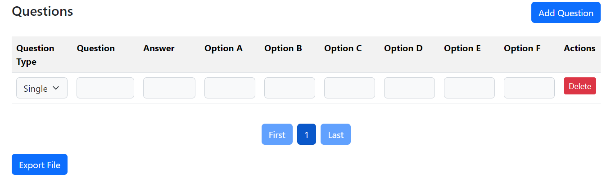

User Guide
Create New File Guide
Create new practice file have 2 option, you can create the file in application or by using Microsoft Excel
Use Microsft Excel
Sample CSV File1. For create new file by Microsoft Excel, you need to follow with the format below, Or you can download the like above for the file. Change the question type to the question you want, and for true-false question the option is only A with TRUE and B with FALSE only.
2. After complete, save your file in the format .CSV.
Use application
1. For create new file by application, go to "New File page", input the question and export the file to your computer.
2. For question option, option A and B is required and for option C to F is optional
